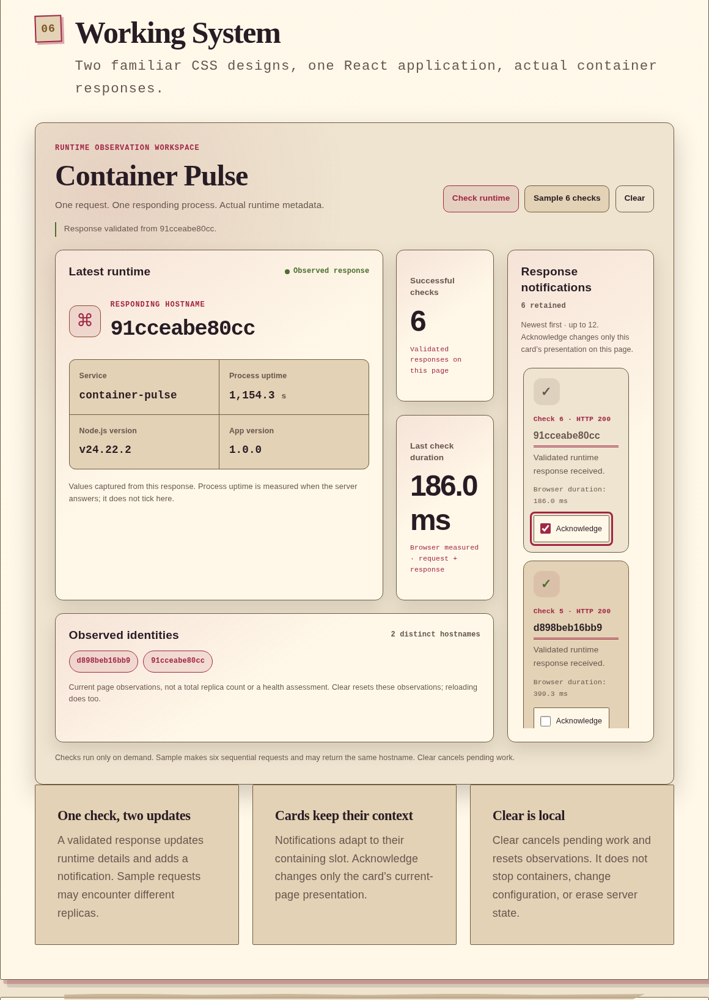

Container Pulse · Local Docker QA
Real runtime.
Recorded evidence.
Earlier standalone baseline. The Section 6 layout and graphs were subsequently refined. Use the current refinement verification report for the reviewed revision, updated browser evidence and fresh Lighthouse scores. Results below are retained historical evidence, not current-revision totals.
Runtime and independent reviews passed · visual review ready
Standalone React dashboard and responsive notification cards at http://127.0.0.1:8796/. This report does not certify public deployment or academic submission.
2 → 3 → 2Actual replica scaling and restoration
58 / 22Node / infrastructure checks passed
220Docker-served browser checks passed
817Protected source files unchanged
Docker acceptance
Two non-root app replicas and one non-root gateway are healthy on an independent Compose network. Applied resource limits, read-only configuration, health and restart settings, runtime image contents, and every expected live hostname were inspected. Only localhost:8796 is published; Week 5 container state and localhost:80 identity remained unchanged.
Original successful runtime report · Source-only dependency cache proof · 46 served assets match the build
Actual Docker Lighthouse audits
| Profile | Performance | Accessibility | Best Practices | SEO |
|---|---|---|---|---|
| Mobile | 97 | 100 | 100 | 100 |
| Desktop | 99 | 100 | 100 | 100 |
Mobile report · Desktop report · Original profiles, warnings and findings
Mobile retains a CPU-calibration warning. Neither audit reported a runtime error. These CLI/Chromium emulation results are machine- and appearance-specific, not physical-device testing, full WCAG certification, or an all-theme contrast audit.
Browser and visual coverage
Chromium and Firefox exercised real requests, notification acknowledgment, sampling, clearing, offline recovery, controlled failure/stale-response cases, keyboard controls, and seven local themes in both modes. The main 220-check suite includes 196 layout cases; 112 additional populated-state layout checks remain a separate report and are not added to the main total.
Main raw browser results · Populated-state results · Node tests · Infrastructure tests
Working System — actual populated state

The notification feed intentionally scrolls; this image shows its visible portion, not all retained cards. Counts describe the current page, not a complete cluster inventory.

Retained failures and corrections
- Missing shared static assets: explicit allowlist corrected after failing regressions.
- Two-pixel narrow header overflow and a diagram label collision: reproduced and narrowly corrected.
- SIGTERM restoration: subprocess regression added; catchable termination follows bounded restoration. SIGKILL remains unrecoverable.
- Docker metadata probe: optional-map handling and like-for-like image digest comparison corrected without weakening deployment requirements.
Runtime attempt 1 · Attempt 2 · Attempt 3 · Initial browser failures · Historical development audit
Scope and remaining gates
Application specification, code/security, and focused verifier-compatibility reviews passed. All 71 source/test fingerprints match the reviewed and browser-tested snapshot. Student visual approval, Resume integration, public hosting, Git publication, and any recording/submission remain separate.
Complete technical QA record · Byte-preservation evidence manifest